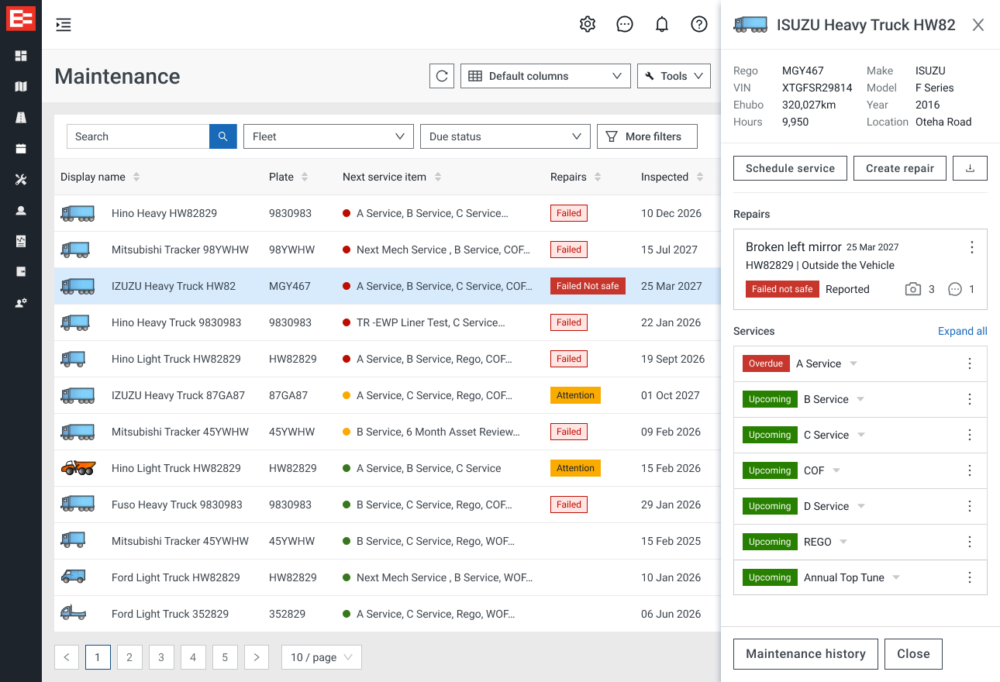

The Problem: EROAD's vehicle inspection app was difficult for drivers to use and didn’t have the features necessary for managing a trucking company effectively. Fleet managers faced even bigger challenges. Vehicle defects were tracked separately from scheduled services, leading to confusion and a lack of visibility into issues. As a result, businesses couldn’t track the risks or generate reports, and mechanics and finance teams were left without critical information.
Research

As a UX designer, my job goes beyond just making things look good. I focus on solving user problems by first understanding them, designing solutions, and testing them. Good design isn’t just about how things look—it’s about how well they work. To start, I researched by speaking directly with customers, gathering insights to create personas and user stories that focused on their needs.

Through interviews, surveys, and analysis of usage patterns, I was able to create flow diagrams and uncovered the key issues users were facing and where the system was falling short. By understanding these pain points, I was able to identify several key features that would improve the user experience of the app.
Design Process:

I created simple wireframes to outline a logical structure and flow for these new features. This allowed for quick, efficient iterations, making it easier to collaborate with all stakeholders and speed up development. The core of good design is not just building something that works, but understanding why it works.
EROAD Inspect App
With detailed wireframes in place, I moved on to creating high-fidelity prototypes that adhered to EROAD’s design system, ensuring consistency across their products. The development of the app was a team effort, with designers, developers, and stakeholders all aligned on user and business goals. I oversaw the implementation, testing, and final delivery. As a result, the app saw a 92% adoption rate of the new version and a 30% increase in user satisfaction. Business Impact: The redesigned app is now used by over 150,000 drivers each month. It created new sales opportunities and delivered a significant ROI, providing a strong return on the initial investment.
Preventive Maintenance

The final step was redesigning the back office view to bring all maintenance items - both preventative and corrective - into a single unified interface. Defects became easy to identify and report, and could be quickly scheduled for repairs. Customers could now keep accurate service records, including parts, labor, and tax costs, and calculate the total cost of ownership. They could also generate detailed service history reports, which were useful if the vehicle was ever involved in an accident. The key lesson learned in this project was: if you put the user first, everything else will fall into place.